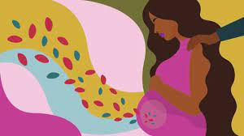
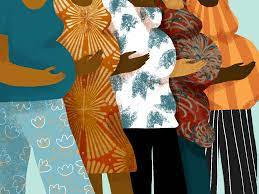

Protecting Black Mothers through understanding the cultural competency and racial bias in the medical field
About My Topic
At an unprecedented rate, people of color are losing their lives in the hands of the healthcare field. Black women are more likely to experience preventable maternal death than white women. One could ask if black women have a voice regarding their health. Black women's voices are forced into silence due to the lack of racial equity and cultural competence that plagues the medical field. Still, by simply listening and advocating for these women, thousands of lives could be saved.
Impact!

Where can this problem have lasting effects?
Why?

Where else can this problem have lasting effects?
Why?
Where else else can this problem have lasting effects?
Shawnee talks about the death of her eldest daughter due to maternal mortality, her journey through trauma and grief, as well as, her unshakeable commitment to reproductive justice, advocacy and activism.
Sign the Petition
Help us make a difference! Sign our petition now.
Signatures:
Dark Mode Toggle
National Association to Advance Black Birth (NAABB)
This national non-profit works to combat the effects of structural racism on maternal and infant health outcomes. NAABB provides guides for Black families looking for more statistics on Black birth, as well as resources on where to find trusted birthing professionals, such as midwives. The organization also helps these birth workers get the tools and education they need to advocate for better Black maternal health outcomes, including an annual scholarship that offsets education costs for Black midwifery students.
MommiNation
MommiNation, co-founded by Mykal Steen and four-time Olympic gold-medalist Sanya Richards-Ross, builds a supportive and uplifting community for Black moms across the nation. While they started online, the group has slowly expanded to in-person meetups with chapters in select cities to help further the bond between Black moms in the same communities.